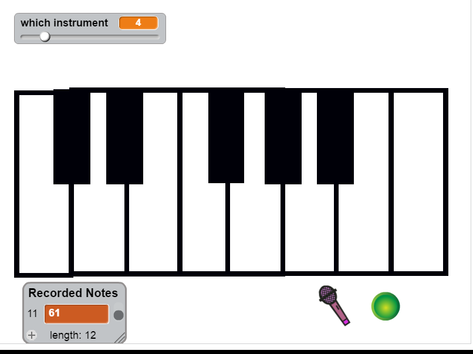
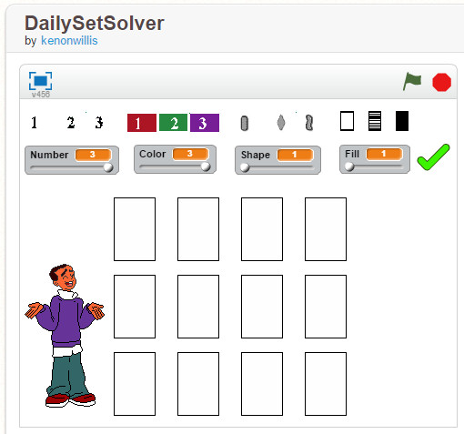
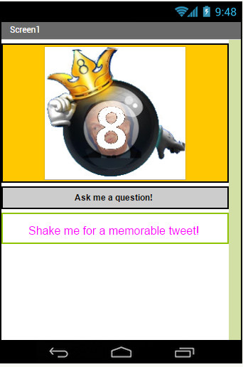

| Home | Portfolio | About Me |
This is my Portfolio Page!


Scratch Assignments: Click on the icons to see the games
|  Piano Remix |
This is was a remix assignment where we took an existing simple piano scratch project and extended it to record a single song. We wanted to go further and have it save complete songs, but ran into a Scratch limitation trying to deal with lists of lists |
| 
Daily Set Solver |
In this assignment, Kenon and I attempted to create a
set game solver. See the Daily Set Puzzle website for details. While we have come up with a reasonable interface for setting the initial conditions for a set of 12 cards, we again ran into issues dealing with the limitations of Scratch. We will use this prototype later, to complete in Python |
App Inventor Assignments: Click on the icons to download the .aia files
|  King 8-Ball Tweeter |
This is my first App Inventor remix. John and I started with instructions for a text based 8-ball simulation using an accelerometer, then extended it to use text to speach, and finally added some recent political tweets and a modified "King Tweeter" graphic. You can download an .aia (app inventor) export of this assignment and import into app inventor to play with. |